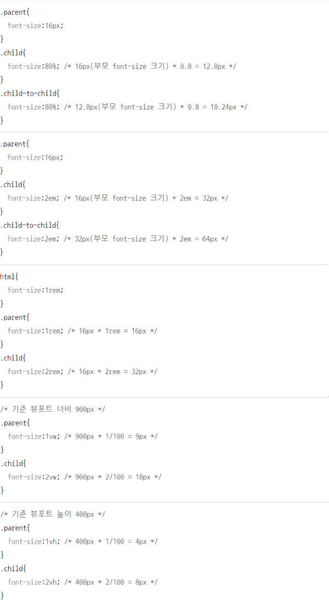

CSS의 특징 살펴보기
기본 스타일 시트
자세한 설명
-
웹 브라우저 자체에 웹 브라우저에 표시되는 요소들의 글꼴이나 크기, 굵기, 문단 설정과 같은 스타일이 미리 정의된 파일 또는 문서 양식인 기본 스타일 시트가 내장되어 있음
(∴ hn 태그도 웹 브라우저에 내장된 기본스타일 시트에 영향을 받아 크기와 굵기가 각각 다르게 표시됨)
(∴ IE, 엣지, 크롬, 사파리, 파이어폭스 등의 웹브라우저에도 전부 독자적으로 스타일이 정의된 기본 스타일 시트 존재)
적용 우선순위와 개별성
자세한 설명
- 기본 스타일 시트에 정의된 스타일 속성보다 사용자가 정의한 스타일 속성이 우선 적용됨
-
같은 태그 요소의 선택자가 여럿일 때에는 마지막에 영향을 주는 하나의 스타일만 적용됨
(어떤 스타일이 마지막에 영향을 주는지는 CSS의 개별성 규칙에 따라 결정됨)
개별성 규칙의 점수
| 선택자 |
예 |
점수 |
| 전체 선택자 |
* |
0 |
| 태그 선택자 |
div, p, h1 |
1 |
| 가상 요소 선택자 |
::before, ::after |
1 |
| 클래스 선택자 |
.box, .title |
10 |
| 가상 클래스 선택자 |
:hover, :visited, :link |
10 |
| 아이디 선택자 |
#title, #main |
100 |
| 인라인 스타일 |
style="color:red" |
1,000 |
| 특별 문법 |
!important |
10,000점 |
- .title{color:blue} -> 10점
- h1{color:red} -> 1점
- nav > h2{} -> 2점
- nav .title{} 11점
- #main .sub{} -> 110점
- a:hover{} -> 11점
- a:hover span::first-letter{} -> 13점
- #main #sub .title{} -> 210점
- p{color:blue !important;} -> 10,000점
개별성 규칙 점수를 계산해 주는 사이트를 활용하면 점수를 쉽게 확인할 수 있음
상속
자세한 설명
-
부모 요소에 적용된 스타일을 자식 요소가 그대로 물려받아 적용됨
div 태그에 p 태그가 있고, div 태그의 스타일을 지정하면 div 태그의 자식인 p 태그에도 스타일이 적용 됨
- 모든 CSS 속성이 상속되는 것은 아님 상속되는 속성과 안 되는 속성 알아보기
단위
자세한 설명
-
절대 단위 : 어떤 환경이라도 동일한 크기를 보이는 단위
- px : 모니터의 화면을 구성하는 사각형 1개의 크기 의미 (절대 단위는 px 한 가지임)
-
상대 단위 : 부모 요소 또는 웹 브라우저의 창 크기에 따라 상대적으로 결정되는 단위
- % : 부모 요소의 속성값에 상대적인 크기를 가짐
- em : 부모 요소의 텍스트 크기에 상대적인 크기를 가짐
- rem : html 태그의 텍스트 크기에 상대적인 크기를 가짐 (1rem = 16px
- vw : 뷰포트의 너비를 기준으로 상대적인 크기를 가짐 (1vw = 뷰포트 너비의 1/100) (뷰포트 : 코드가 보이는 대상, 즉 웹 브라우저 창
- vh : 뷰포트의 높이를 기준으로 상대적인 크기를 가짐 (1vh = 뷰포트 높이의 1/100)

색상 표기법
자세한 설명
- 키워드 표기법 : 색상의 영문명을 속성값으로 사용 (color:red) CSS에서 사용 가능한 색상 키워드 속성
-
RGB 색상 표기법 : 빨간색, 초록색, 파란색을 이용해 특정 색을 표현하는 방법(rgb 형식) (color:rgb(255, 0, 0));
추가로 색의 투명도를 의미하는 알파(alpha)값을 사용할 수 있음 (rgba 형식) (color:rgb(0, 255, 0, .5))
- RGB 값은 숫자(0 ~ 255)로 표기 (가장 낮은 색 값은 0, 높은 색 값은 255)
color:rgb(255, 0, 0)
- 알파 값은 소수점(0 ~ 1)로 표기 (앞의 정수 부분 0은 생략할 수 있어서 .1과 같은 형식으로 표기해도 됨)
color:rgb(0, 255, 0, .5)
-
HEX 표기법 : Red, Green, Blue에 해당하는 값을 각각 16진수로 변환해 00~ff로 나타내는 표기법 (color:#ff0000)
- 앞에 #을 붙이는 것이 특징
- 00이 가장 낮은 값, ff가 가장 높은 값
- R, G, B에 해당하는 16진수가 같다면 줄여서 표기 가능 (#ff0000 = #f00 , #335533 = #353)
(앞에 #을 붙이는 것이 특징. 00이 가장 낮은 값, ff가 가장 높은 값)